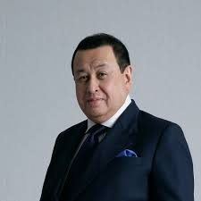
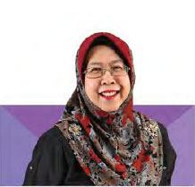
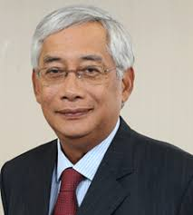
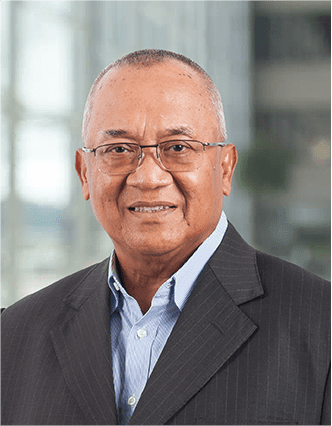

"Leadership Is About Vission And Responsibility, Not About Power"
DATUK MUSTAFHA ABD RAZAK -Current KFC Chairman-

YAM TENGKU SULAIMAN SHAH ALHAJ IBNI ALMARHUM SULTAN SALAHUDDIN ABDUL AZIZ SHAH ALHAJ He was appointed to the Board of KFC Holdings Malaysia Bhd on 1 June 2011 as an Independent Non-Executive Director.

DATIN PADUKA SITI SA’DIAH BINTI SHEIKH BAKIR She was appointed to the Board of KFC Holdings Malaysia Bhd on 1 January 2010 as a Non Independent Non-Executive Director
KAMARUZZAMAN BIN ABU KASSIM He was appointed to the Board on 27 June 2006 and as Deputy Chairman on 2 July 2006.

TAN SRI DATO’ DR YAHYA BIN AWANG He was appointed to the Board of KFC Holdings Malaysia Bhd on 2 May 2008 as an Independent Non-Executive Director

AHAMAD BIN MOHAMAD He was appointed to the Board on 27 June 2006 and as Deputy Chairman on 2 July 2006
JAMALUDIN BIN MD ALI He was appointed to the Board on 27 June 2006 and as Managing Director on 2 July 2006